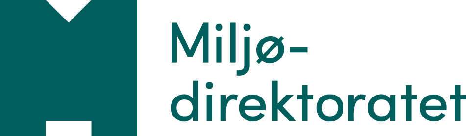
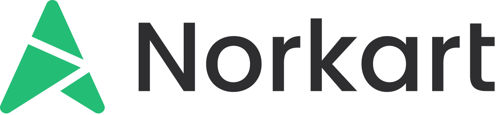

SkyGeo 2027Nasjonal konferanse om Cloud Native Geospatial
20. januar 2027Miljødirektoratet på Helsfyr, Oslo
Resultater, verktøy og diskusjoner om åpne, skybaserte formater for raster- og vektordata.
Arrangert av SkyGeo-initiativet


Fra tjenester og nedlasting til åpne formater i skyen
Flybilder, høydedata og kartdata er en del av Norges digitale grunnmur, men distribusjonen bygger på eldre teknologi som WMS, WMTS og filnedlasting, som ikke er laget for sky og maskinell storbruk.
Cloud Native Geospatial gir åpne formater og standarder som lar deg bruke store datasett direkte fra skyen. Teknologien brukes av blant andre NASA, ESA og Microsoft Planetary Computer. I Norge er arbeidet fortsatt tidlig og fragmentert, og SkyGeo er den første åpne arenaen for å dele resultatene.
Rasterdata
Flybilder, høydedata og satellittdata i formater som Cloud Optimized GeoTIFF og Zarr, organisert i STAC-kataloger. Norkart tester dette på norske flybilder og høydedata i 2026.
Vektordata
Kartdata og posisjonsdata i skyvennlige formater som PMTiles og GeoParquet, og tilnærminger for store datamengder som AIS-data hos Kystverket.
Hvem konferansen er for
IT-bransjen
Du utvikler løsninger som bruker geodata.
Geomatikkbransjen
Du leverer kart, analyse og rådgivning.
Offentlig sektor
Du forvalter eller bruker nasjonale data.
Forskning og utdanning
Du jobber med GIS, geomatikk eller jordobservasjon. Studenter er velkomne.
Hva konferansen skal gi deg
Resultater fra praksis
Foredrag og demoer fra dem som har brukt CNG på norske data.
Oversikt over verktøykassen
COG, STAC, PMTiles, GeoParquet og Zarr, kort og forståelig.
Rundbord
Diskusjon om temaene du bryr deg om.
Retning for veien videre
Hvem eier og utvikler verktøyene etter forskningsprosjektene?
Program
Programmet er tentativt. Klokkeslett og innhold kan endres.
Registrering
Kaffe, mingling og plakater i foajeen
Velkommen
Keynote
Foredrag, demoer og kurs
Lunsj
Foredrag, demoer og kurs
Rundbordsdiskusjoner
Velg blant sju temaer i to runder, med oppsummering fra bordene.
Keynote
Afterparty
Send inn forslag
Har du resultater eller erfaringer med Cloud Native Geospatial? Vi vil gjerne ha forslag til foredrag, demoer og kurs.
Frist for innsending: 10. desember
Send inn forslagForedrag
Del erfaringer og resultater fra praksis.
Demo
Vis hvordan det fungerer på ekte data.
Kurs
Lær bort et verktøy eller en arbeidsflyt.
Rundbord: velg temaet du vil diskutere
To runder på 40 minutter. Du kan bytte bord mellom rundene, og hvert bord oppsummerer for alle på slutten. Temaene er foreløpige.
CNG og KI-agenter
Hvordan gjør vi data og kataloger agentvennlige?
Visualisering
Hva er veien videre etter WMS og WMTS?
Strategi og ledelse
Hvordan forankrer vi CNG i virksomhetene?
Geografisk infrastruktur og SDI
Bør Norges geografiske grunnmur bygges på CNG?
Bits and bytes
Chunking, komprimering, ytelse og kostnader. Dypt teknisk.
Vektordata
GeoParquet, FlatGeobuf og PMTiles for vektor.
Rasterdata
COG, Zarr og STAC for flybilder og høydedata.
Praktisk informasjon
- Dato og tid
- 20. januar 2027, kl. 08:30–16:00, deretter afterparty
- Sted
- Miljødirektoratet på Helsfyr, Oslo. [adresse og lokale]
- Språk
- [norsk / engelsk – avklar]
Slik kommer du deg dit
[Kollektivtransport, parkering og gangavstand fra stasjon. Legg gjerne til lenke til kart.]
Kjekt å vite
Må jeg kunne CNG fra før?
Nei. Programmet er lagt opp for en blandet gruppe, fra dem som er nysgjerrige til dem som allerede har prøvd teknologien.
Er konferansen bare for dem som jobber med kart?
Nei. Konferansen retter seg også mot IT-bransjen, offentlig sektor og forskningsmiljøer som forvalter eller bruker store datasett.
Får jeg se presentasjonene etterpå?
[Avklar og oppdater: presentasjoner og eventuelt opptak publiseres her.]
Kan jeg holde innlegg?
Ja. Send inn forslag til foredrag, demoer eller kurs via skjemaet. Frist er 10. desember.
Meld deg på SkyGeo 2027
Konferansen er åpen for alle. Påmelding skjer via [påmeldingsløsning].
Ordinær [kr] · Student [kr] · Prisen dekker [bekreft: kaffe og lunsj]
Gå til påmelding